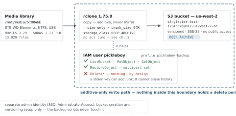
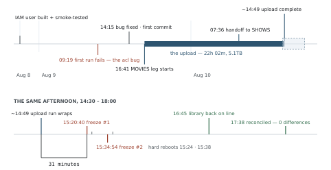
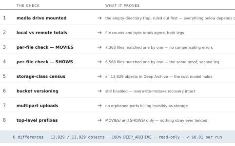
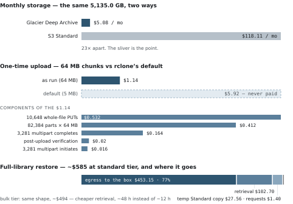

Two libraries into two Glacier archives — five terabytes of Jellyfin media in Deep Archive, the full Immich photo library in Instant Retrieval: how they were built, what they cost, the bug three reviews blessed, and the afternoon one of them proved its worth.
| 5.1 TBmovies · deep archive | 13,929objects | $5.08per month | 0differences on reconciliation |
| 173 GiBpictures · instant retrieval | 82,455objects | $0.70per month | 0differences on reconciliation |
Over the weekend of August 8–10, 2026, the media library on pickleboy — a self-hosted Jellyfin server — was backed up in full to Amazon S3 Glacier Deep Archive: 13,929 files, 5.1TB, everything in MOVIES and SHOWS. The design is deliberately narrow. It is a disaster-recovery copy, not a sync: additive-only, written by an IAM identity that structurally cannot delete anything, to a versioned bucket in the coldest storage class Amazon sells.
Keeping it costs $5.08 a month — $61.00 a year, about 23 times cheaper than the same bytes in S3 Standard. Getting it all back in a real disaster would cost roughly $494–585 and take a day or two, which is the accepted trade: this backup exists to be cheap to keep and is expected never to be needed.
The upload itself took 22 hours 2 minutes at an average of 66 MiB/s, and the result was verified independently the same afternoon it finished: every one of the 13,929 objects reconciled against the local library by count and by byte, zero differences, and a full census confirming 100% of objects landed in Deep Archive. The verification is now a repeatable eight-check script, not a one-time event.
The build produced exactly one real bug — a config line three separate review passes had explicitly confirmed as necessary, which then silently broke every write on the first real run. It announced itself in the log's first five lines and was fixed by deletion. The same day the upload finished, an unrelated crash took the whole library offline in a way that looked exactly like total data loss; it wasn't, but for 25 minutes the backup — 31 minutes old at the time of the crash — was briefly the only copy that appeared to exist.
The next morning, the second library followed the same road. The Immich photo collection — the other USB drive, the one holding the irreplaceable data — went to S3 Glacier Instant Retrieval on August 11: 173 GiB and 82,455 objects, in a separate bucket, under a second no-delete policy on the same backup user, and in the opposite storage class — because a photo restore is an album on a bad day, not a disaster, and should answer in milliseconds rather than in 12 to 48 hours. The upload ran four hours and five minutes with zero errors and was reconciled byte-exact against S3 the same afternoon: 82,455 of 82,455 objects, zero differences. Keeping it costs about $0.70 a month; restoring every byte of it, about twelve dollars.
Nothing is outstanding. The one deliberately unexercised path is the movies restore itself, which costs real money to drill; its permissions are tested, its procedure documented, and its price known. The one deliberately uninstalled piece is the pictures cron — written and tested, held back by choice. Next scheduled action: a yearly rotation of the backup credentials.
| 22h 02mmovies upload, wall clock | 66 MiB/saverage throughput | $1.14one-time upload cost | $61.00per year to keep |
| 4h 05mpictures upload, wall clock | 12 MiB/saverage throughput | $1.65one-time upload cost | $8.40per year to keep |
Pickleboy is a headless Ubuntu server in a closet: one box, no monitor, managed entirely over SSH. It runs the household's self-hosted services in Docker — the two that matter here are Jellyfin, the media server, and Immich, the photo server. It has 15 GB of RAM, a 512 GB internal SSD for the operating system, and its bulk storage hangs off USB: an 8TB WD Elements drive holding the Jellyfin library at /mnt/media/STORAGE, and a 4TB WD My Book holding the photos.
The 8TB drive is the subject of this report. It carries about five terabytes of hand-curated movies and television — years of acquiring, picking quality cuts, and pruning — and it is formatted NTFS, mounted read-write on Linux through the kernel's ntfs3 driver. That combination works, but it is the least battle-hardened piece of the stack, a fact that becomes relevant in chapter 7.
Until this project, that drive was the only copy. Media is re-acquirable in principle, so this was a considered risk rather than an oversight — but "in principle" means months of re-curation in practice, and the drive is a single consumer USB disk with years on the clock. What "backed up" needed to mean here was narrow and specific: a second copy that survives the drive dying, the box dying, or a mistake at the keyboard — for as close to free as physics and Amazon allow. Not sync, not versioned working storage, not something touched weekly. A copy of last resort.
Amazon's S3 Glacier Deep Archive is built for exactly that shape: storage priced at about a dollar per terabyte-month, in exchange for retrievals that take 12–48 hours and cost real money. Those penalties are irrelevant to a disaster-recovery copy and the price is not. The photos on the other drive were deliberately kept out of this project's scope — they change differently, accumulate constantly, and deserved their own design rather than a bolt-on to this one. They have since gotten it: a separate backup to S3 Glacier Instant Retrieval, completed and verified August 11, 2026.
Before any architecture, the library was measured — actually walked with du and find, not estimated from folder counts. The measured numbers became the project's fixed points, and every later figure in this report reconciles back to them.
| Leg | Bytes | Size | Files | Share |
|---|---|---|---|---|
| MOVIES | 3,612,780,382,420 | 3.286 TiB | 7,363 | 65% |
| SHOWS | 1,900,911,285,394 | 1.729 TiB | 6,566 | 35% |
| Total | 5,513,691,667,814 | 5,135 GiB | 13,929 | 100% |
Of those files, 3,281 are large enough (over 200 MiB) that S3 uploads them in pieces — 82,384 multipart parts at the 64 MB chunk size this project settled on, a figure that matters to the one-time cost story in chapter 9. The rest, 10,648 files, upload as single PUTs.
The obvious question before paying to store five terabytes: does compressing it first save anything? The obvious answer — "it's already-compressed video, so no" — is the kind of claim this project preferred to test. Real 100 MB samples from mid-file were run through three generations of general-purpose codecs at aggressive settings: gzip -9, zstd -19, and xz -9.
Best case across all three: 1.49% smaller. Worst case: the "compressed" archive came out marginally bigger. At Deep Archive prices, the best case is worth about nine cents a month — against which compression would cost CPU-days up front, and, far worse, turn every future single-file restore into "retrieve and unpack an archive volume." The files ship raw.
The lever that actually works is re-encoding — modern codecs could plausibly shrink the library 30–50%, proven with a direct double-rip comparison of the same film. It was rejected anyway: it is a months-long transcoding project that alters the originals, which is a different undertaking than backing them up. Worth knowing the lever exists; wrong project to pull it in.
The library also contains debris that rode along with downloads over the years — 383 .exe files, stray .rar fragments, sample clips, about 1,690 files and 2.2 MB in all. A 146-line exclude list was drafted, priced, and thrown away: uploading the junk costs roughly nine cents once and nothing meaningful per month, while the exclude list would be a permanent maintenance liability wired into every future command, silently going stale as new downloads invent new junk. Simplicity won, deliberately.
The whole architecture is six decisions. Each was argued, several were reversed from first instincts, and one — number 3 — carried a hidden landmine that gets its own chapter. They are recorded here as they stand, with the reasoning that locked them.
The sync command is rclone copy — additive only. A mirror-style sync propagates local deletions to the backup, which is exactly backwards for disaster recovery: the most likely disaster is something deleting local files. Copy-only means a local mistake cannot reach into the archive, and it structurally sidesteps Deep Archive's 180-day early-deletion fee, which a mirroring sync could trigger through routine local reorganization.
The backup covers /mnt/media/STORAGE/MOVIES and /mnt/media/STORAGE/SHOWS and nothing else. This matches how the library actually works: new downloads land elsewhere first and double as the to-watch queue, then get hand-moved into the library in batches once watched. Anything not yet moved in is, by definition, not yet curated — and is automatically excluded without any special handling.
An empty bucket from earlier experimentation already existed — s3-glacier-test-123456789012-us-west-2-an, us-west-2. It was verified clean and correctly configured before reuse: zero objects, SSE-S3 encryption on by default, all four public-access-block flags set, no lifecycle rules, no bucket policy. One property mattered more than anyone realized at the time: Object Ownership is BucketOwnerEnforced, meaning ACLs are disabled bucket-wide. The config consequence drawn from that fact became this project's only real bug — chapter 5.
The backup runs as a dedicated IAM user, not the account's admin identity — a decision reversed from the initial call. The admin profile uses SSO, and SSO sessions cap at 12 hours; the initial upload was projected to take roughly a day, meaning credentials would expire mid-run. That practical problem forced the right security posture: a dedicated user with long-lived keys, scoped to this one bucket, granted List, Put, Get, Restore, and the multipart set — and no delete permission of any kind. A leaked key can add junk to one bucket; it cannot erase a byte of history. The admin identity still exists, used only for one-time administrative acts: creating the user, flipping bucket settings.

Copy-only protects the archive from local mistakes, but not from remote-side ones — an accidental recursive delete run with the wrong profile, or a sync typed out of habit someday. Bucket versioning converts either from permanent loss into a recoverable delete-marker. In normal operation it costs effectively nothing: this library is write-once, with no automation churning files, so second versions simply don't get created.
Chapter 2's junk files stay. Nine cents once beats a config file that must be maintained forever and fails silently when it goes stale. The archive is a faithful copy of the library, debris included — which also means a restore reproduces the library exactly as it was, no reconstruction logic required.
The build itself was deliberately boring: install one tool, create one user, write one config, enable one bucket setting, then test the pessimistic cases before moving a single real byte. The plan went through three review passes before execution — one for correctness and safety, one a simplicity pass that stripped speculative tuning, one a cost audit that re-derived every dollar figure against AWS's published rates.
The simplicity pass earned its keep twice. It removed the concurrency tuning flags (--transfers, --checkers, upload concurrency) on the argument that the bottleneck is a single spinning USB disk, where more concurrent reads mean more seek thrash, not more throughput. And it moved storage_class and chunk_size out of command-line flags into the remote config itself — eliminating the forget-the-flag failure mode where one absent-minded invocation uploads terabytes into the wrong storage class. The 64 MB chunk size, set once in config, is also what cut the projected one-time upload fees from $5.92 to $1.14.
Setup, as executed: rclone 1.75.0 via its official installer; the IAM user and its policy (Appendix B) created through the admin profile; the remote config written (Appendix C); versioning enabled on the bucket; and then a five-check smoke test against the new credentials — test-iam-user.sh, Appendix A — which proves the grants work and that delete is denied. The test that must fail is the most important line in it.
Three failure modes got rehearsed before the real run rather than reasoned about:
Then the first real run was launched — and failed instantly, five times in ninety-nine seconds.
Decision 3 established that the bucket has ACLs disabled (BucketOwnerEnforced). From that true fact, the build plan derived a config requirement — stated with complete confidence, in writing:
The plan, before the first run
"Object Ownership is BucketOwnerEnforced (ACLs disabled) — this is why the rclone remote config below must set acl = unset; without it the very first upload would fail with AccessControlListNotSupported."
"Reviewed and confirmed: … every technical claim (acl=unset necessity …) was independently verified against the live box, AWS's own docs/API, and rclone's own docs."
It was exactly backwards. The acl = unset line did not prevent the failure — it was the failure. On the first real run, every write died with the same error:
2026/08/09 09:19:35 ERROR : 30.Days.Of.Night.2007.1080p.BrRip.x264.YIFY.mp4: Failed to copy: multi-thread copy: failed to open chunk writer: create multipart upload failed: operation error S3: CreateMultipartUpload, … StatusCode: 400 … api error InvalidArgument: UnknownError [ four more, identical shape, through 09:21:14 ]
The mechanism, once found, is almost funny: with the line present, rclone put an ACL value on the wire; the bucket, with ACLs disabled, rejected any request that carries one. With the line simply absent, rclone sends no ACL at all — which is the correct behavior the plan thought it was configuring. The fix was deletion, plus one genuinely needed addition (no_check_bucket, since the scoped user can't perform bucket-existence checks):
[pickleboy-glacier] type = s3 … - acl = unset <- removed. this line was the bug + no_check_bucket = true <- added with the fix
The uncomfortable part is not the bug — it's the review record. Three separate passes signed off on that line, one of them claiming independent verification of its necessity. All three verified it the same way: by reading — docs, config, bucket properties. None of them ever wrote an object. The smoke test that did write (chapter 4) wrote through the AWS CLI, not through rclone, so the rclone-specific config never got exercised until the real run. A claim can survive any number of reviews that don't touch the code path it's about.
The lesson got applied the same day it was learned, and shapes everything in chapter 8: proof requires exercising the actual path, and a check that can't fail isn't a check. Total cost of the bug: five error lines in a log and about five hours between failure and fix — cheap, because the failure was loud. The expensive version of this bug is the one that fails quietly.
With the acl line gone, the same command that had failed five times ran for twenty-two hours without a single error. The run was two sequential rclone copy legs — MOVIES, then SHOWS — inside tmux, logging to backup.log. Nobody had ever written down how long it actually took; the figures below were mined from rclone's own log for this report.
| Leg | Started | Finished | Elapsed | Moved | Rate |
|---|---|---|---|---|---|
| MOVIES | Aug 9, 16:41:30 | Aug 10, 07:36:10 | 14h 54m 40s | 3.286 TiB | 61.5 MiB/s |
| SHOWS | Aug 10, 07:36:10 | Aug 10, 14:43:43 | 7h 07m 33s | 1.729 TiB | 85.7 MiB/s |
| Combined | back-to-back, no gap | 22h 02m 13s | 5.015 TiB | 66.3 MiB/s | |
MOVIES moved its 7,363 files overnight — 7,363 of 7,363, zero errors. SHOWS followed straight through Monday morning and into the afternoon, 6,566 for 6,566. The five errors from chapter 5 are the only ERROR lines the log has ever recorded; the runs that mattered were clean end to end. Sustained throughput of 66 MiB/s off a single consumer USB drive, for a one-time cost of $1.14 in request fees (chapter 9), is about as undramatic as a five-terabyte upload can be — which was the whole design intent.
The final transfer landed in the log at 14:43:43 on Monday, August 10, and the run wrapped up around 14:49. The timing turned out to matter.
A little after three that same afternoon, pickleboy froze solid. Then it froze again. Then the entire media library appeared to be gone. None of these things had anything to do with the upload — and everything to do with why backups get taken in the first place.
The trigger was an AI coding session doing reconnaissance in this very project's directory. On this box, grep in an interactive shell is not GNU grep: a shell function in ~/.bashrc reroutes it through the coding tool's own search binary. The session ran a pattern of a very particular shape against a 202 KB HTML report — one whose base64-embedded fonts put 61,000 characters on a single line:
grep -oE '[^<>]{0,90}(\$0\.[0-9]+[^<>]{0,50}|Bulk[^<>]{0,60}|48 hour[^<>]{0,40}
|12 hour[^<>]{0,40}|egress[^<>]{0,60}|per GB[^<>]{0,40})' \
~/rclone-backups/artifacts/the-actual-bill.html | sort -u | head -40
Bounded-repetition quantifiers, feeding a six-way alternation, applied at every position of a 61,000-character line: the search space explodes combinatorially. The process climbed to 12.4 GB of resident memory and 98.8% CPU — on a box with 15 GB of RAM, 4 GB of swap, and, at the time, no userspace out-of-memory protection at all. The kernel's own OOM killer never fired; the machine simply thrashed to a standstill. At 15:20:40, pickleboy stopped responding entirely. Hard power cycle.
It happened twice because the session's harness auto-retried the failed step after the reboot: same file, same pattern, same result. The second attempt was actually caught live — the process visible at 12.4 GB before the box went under at 15:34:54. Second hard power cycle. By 15:38 the machine was up and stable, the offending session killed.
The freezes were the cause; the frightening part was the effect. The two hard power cycles caught the 8TB NTFS drive mid-write and set its dirty bit — the volume's own flag that it wasn't cleanly unmounted. The ntfs3 kernel driver refuses to mount a dirty volume read-write. And here is the trap: when the mount silently fails at boot, /mnt/media/STORAGE still exists — as the empty directory on the root SSD that the drive normally mounts over. Every path resolves. Every tool reports an empty directory. Jellyfin dutifully showed a library of nothing. From the couch, and from the shell, it looked exactly like 5.1TB had been deleted.
Diagnosis took discipline precisely because the failure was dressed as catastrophe: lsblk and blkid showed the volume intact and correctly sized; the kernel log showed ntfs3 declining the mount, naming the dirty bit. The fix was proportionate to the actual fault, chosen after enumerating what each repair tool would write: ntfsfix -d — clear the dirty bit, empty the journal, repair the mirror of the master file table's first records (the damaged record turned out to be the one holding the volume-dirty flag itself). Remount: 5.1T used, 1,329 movies, 203 shows, all present. One Jellyfin container restart later, the household was watching TV again.
Zero data loss. About 25 minutes between "it's all gone" and "it's all back." The follow-up hardening landed the same evening: earlyoom now runs on the box — a runaway process gets killed before it can take the machine down, which removes the entire freeze→power-cycle→dirty-bit chain at its first link. The service status script also now asserts the mounts directly, so a failed mount can never again impersonate an empty library.
The upload finished at roughly 14:49. The first freeze hit at 15:20:40. For thirty-one minutes, this backup was a completed project; then it was, briefly, the only copy of the library that appeared to exist. The crash was a false alarm — the drive was fine — but nobody knew that during the twenty-five minutes it took to prove. What the backup bought, on day one, was the difference between "we may have just lost five terabytes of curation" and "worst case, we restore." It has already earned its keep, and it has never been read from.

An unverified backup is a hope, not a backup. Three hours after the upload — and one recovered "disaster" later — the archive was reconciled against the local library it claims to protect. Independently: fresh listings from S3, walked against the actual files on disk, not against the upload's own logs.
| Check | Result |
|---|---|
| MOVIES objects, local → remote | 7,363 → 7,363 |
| SHOWS objects, local → remote | 6,566 → 6,566 |
| MOVIES bytes | 3,612,780,382,420 — identical |
| SHOWS bytes | 1,900,911,285,394 — identical |
| Per-file check, both legs (rclone check --one-way --size-only) | 13,929 matching · 0 differences |
| Storage class, full census | 13,929 / 13,929 DEEP_ARCHIVE |
| Bucket versioning | Enabled |
| Orphaned multipart uploads | none |
| Top-level prefixes | MOVIES/ and SHOWS/ only |
Total: 5,513,691,667,814 bytes — 5,135 GiB — matching the chapter 2 measurement. The whole pass is read-only listings, costing well under a cent.
The aggregate match is necessary but not sufficient, and treating it as sufficient is the classic verification mistake. Counts and byte-sums can hide compensating errors: one file missing, plus one extra file of the same size, nets to zero in both columns. The per-file pass is what closes that hole — every one of the 13,929 files individually confirmed present at its exact size. Only the combination proves the archive.
All 13,929 objects were checked for storage class, not a sample. Storage class is set by a single line of remote config; if that line ever failed to apply, the failure would be systematic, not random — and objects quietly sitting in S3 Standard bill at roughly 23 times the rate. A sample proves the config was right for the sample; the census proves the $5.08 cost model, which is the thing actually being protected.

The per-file check compares sizes, not hashes — --size-only — and that is deliberate, not a shortcut. Computing a hash requires reading the object's body, and Deep Archive bodies cannot be read without first paying to restore them. rclone's --download flag would attempt exactly that: adding it to this check would turn a sub-cent listing into a multi-hundred-dollar retrieval of the entire archive. The prohibition is written into the script's header comment, this report, and the project docs — three places, because it is the one way a routine verification can cost real money.
The reconciliation lives on as verify-backup.sh (Appendix A): eight checks, PASS/FAIL, safe to run anytime. Before it was committed, two independent AI review passes audited it and converged on the same defect: two checks keyed their PASS on empty command output, so an AWS failure — expired credentials, a network blip — would print PASS on a check that never ran. A verification script that fails open is worse than none. Both checks now fail closed, and the review also added the eighth check (top-level prefixes) so the script actually re-proves everything the docs claim it does. Chapter 5's lesson, applied to the tool that exists because of chapter 5's lesson.
Honesty section. Three things this verification deliberately does not establish: restorability end-to-end — RestoreObject has been granted and permission-tested but never exercised, because drilling it costs real money (chapter 10); bit-perfect content — size-match is strong but is not a hash, and hashing requires that same paid restore; and the keys' rotation discipline — static credentials don't expire, so their safety rests on the documented yearly rotation (chapter 11) actually happening. Known, priced, accepted.
Every figure in this chapter was re-derived against AWS's published pricing during the build's cost audit, then reconciled against the earlier estimates. The currency of this project is the monthly number: $5.08.
Deep Archive charges for requests, and a five-terabyte upload makes a lot of them. At rclone's default 5 MB chunk size, the multipart math lands at $5.92. One config line — chunk_size = 64M — cuts the part count from hundreds of thousands to 82,384 and the bill to $1.14, paid once:
| Component | Count | Cost |
|---|---|---|
| Whole-file PUTs (files under 200 MiB) | 10,648 | $0.532 |
| Multipart parts, 64 MB each | 82,384 | $0.412 |
| Multipart completes | 3,281 | $0.164 |
| Post-upload verification (listings) | — | $0.02 |
| Multipart initiates | 3,281 | $0.016 |
| One-time total | $1.14 |
A footnote that surprised: multipart parts bill at S3 Standard's request rate even when destined for Deep Archive — the parts technically live in Standard until the upload completes. The original back-of-envelope had this wrong by an order of magnitude ("roughly $50 vs roughly $4"); the audit's re-derivation ($5.92 vs $1.14) is what got committed to config.
Deep Archive in us-west-2 runs $0.00099 per GB-month. For this library's 5,135.0 GB that is $5.08 a month, $61.00 a year — plus about $0.003 a month for the 40 KB of metadata S3 keeps per archived object. The same bytes in S3 Standard would run $118.11 a month, $1,417.26 a year. An earlier pre-measurement estimate said $5.17; the measured library came in 2% under it.

The number that keeps this design honest: restoring and downloading the entire archive costs roughly $585 at standard tier (~12-hour restores) or $494 at bulk (~48-hour). The breakdown is not what intuition suggests — the Glacier retrieval itself is $102.70. The dominant cost is egress: moving 5.1TB out of AWS onto the box costs $453.15, fully 77% of the bill. Add the temporary Standard-rate copy that exists during the restore window ($27.56) and request fees ($1.40), and the lesson generalizes: with any cloud archive, the exit door is the expensive part, and it's priced by your ISP's competitor.
| Scenario | Year 1 | 3 years |
|---|---|---|
| Library frozen at today's size | $62.40 | $185 |
| Growing +25 GiB/month | $64.40 | $201 |
| Growing +100 GiB/month | $70.10 | $251 |
Two closing sanity checks. Walking away: deleting the whole archive inside the first 180 days would cost $30.50 in early-deletion fees; after day 180, zero — there is no meaningful lock-in. And the 180-day fee itself was investigated and defanged: it bills only on an actual permanent delete, which this project's no-delete IAM posture plus versioning means has no path to ever trigger. Replacing a file within 180 days just versions it — ordinary storage, no penalty. The photo library was priced under the same lens and deliberately left out of scope; photos accumulate continuously rather than in curated batches, and deserved their own design rather than a bolt-on here. That design has since shipped as its own project — a separate bucket in Glacier Instant Retrieval, chosen for millisecond partial restores.
First, the honest framing, because this is the one part of the system that has never run for real: the restore path is designed, permission-scoped, and priced — not drilled. The scoped user's GetObject authorization is genuinely tested (the smoke test's read-back check authorizes against the same path). RestoreObject has only ever been granted. Drilling it means paying a retrieval fee plus a temporary Standard-rate copy, and that cost — not neglect — is why it hasn't happened. The permissions were deliberately granted up front so that a real emergency never requires a mid-crisis IAM change.
One mechanical fact makes everything else cheaper to reason about: HeadObject — metadata, sizes, existence — works on archived objects for free. Only fetching an object's body requires a restore. That is why chapter 8's verification costs pennies, and why checking on the archive never risks triggering retrieval charges by accident.
Proportion matters: the likely real-world restore is not the disaster but a single film — one restore-object call, a 12-to-48-hour wait, and cents. The full-library figures are the worst case, priced so the worst case is a known number instead of a surprise.
As of the evening of August 10, 2026: complete, verified, and quiet. The operating cadence from here is deliberately minimal. New media accumulates locally; every so often, pickleboy-backup.sh re-runs — additive, idempotent, transferring only what's new — and each backup run gets followed by verify-backup.sh. Verification is paired with backups, not with the calendar: Deep Archive does not rot, so a timer-driven check would only re-prove the previous one.
One piece of scheduled maintenance exists. The backup user's static keys don't expire, and heavier machinery to fix that (certificate-based auth, a private CA) was priced and declined as disproportionate — the no-delete, single-bucket scope already bounds what a leaked key can do. The accepted control is a yearly rotation:
aws iam create-access-key --user-name pickleboy --profile pickleboy aws configure --profile pickleboy-backup # paste the new pair interactively, never inline ./test-iam-user.sh # list/put/get pass; delete still denied # after one clean backup run on the new key: aws iam update-access-key --user-name pickleboy --access-key-id <OLD> --status Inactive --profile pickleboy aws iam delete-access-key --user-name pickleboy --access-key-id <OLD> --profile pickleboy
Two adjacent projects sat deliberately outside this one's scope. The first has already shipped — the very next morning, the Immich photo library got the backup design it deserved, and it gets its own telling in the next chapter. The second remains genuinely open: the 8TB drive's NTFS formatting — the fragility chapter 7 exposed — can still be addressed. Converting it to a native Linux filesystem was always blocked on "there's nowhere to put 5.1TB while you reformat." There is now. The existence of a verified offsite copy is what makes retiring the last fragile piece of this stack a routine project instead of a leap.
The bottom line, stated the way chapter 8 would demand: for $1.14 down and $61.00 a year, the library's loss scenarios shrank from "months of re-curation, maybe permanent" to "a known procedure and a known bill." The backup was thirty-one minutes old the first time it mattered. It will spend years being boring now — that's what it's for.
The photo library was set aside twice in this report — in chapter 1 for changing differently, in chapter 9 for deserving its own design. Behind both stood a quieter technical claim, made in the project's cost research rather than in these pages: that Deep Archive's per-object overhead would punish a library of many small files. Reopened, the claim was priced and killed — the overhead doesn't reach a dollar a month until about 4.9 million objects, roughly 180 times this library's count. What actually made the photos a different project was never the object count. It was what a restore is for.
So on August 11 — the movies archive a day old, the crash not yet a day cold — the Immich tree at /mnt/media/PICTURES got its own design: 173 GiB and 82,455 objects, a second bucket, a second remote, a second policy, and the opposite storage class.
The plumbing is the movie architecture, copied deliberately: a fresh bucket (s3-glacier-ir-pictures-123456789012-us-west-2) so the movie bucket's verified invariants stay untouched; versioning on before the first byte; a second rclone remote pinning GLACIER_IR and the 64 MB chunks in config — and carrying no acl line, chapter 5's lesson applied this time at zero cost. The same backup user gained a second inline policy, a structural copy of Appendix B scoped to the new bucket, with the same absence at its center: no delete action of any kind. A separate policy, not an edit: a mistake here can only break the new project. The smoke test passed 5/5, delete denied where it must be.
Deep Archive is priced for copies you hope never to read; chapter 9's ~$585 exit bill is what that hope costs when it fails. Photos invert the bet. The likely request against a photo archive is not a disaster — it is one album, needed today, on what is already a bad day, and a 12-to-48-hour restore-request queue is exactly the wrong shape for that. S3 Glacier Instant Retrieval keeps the same bytes readable in milliseconds: getting an album back is one rclone copy pointed the other direction — no restore dance, no temporary Standard-rate copy billed alongside. The premium over Deep Archive, at this library's size: about 52 cents a month.
One argument for the class died in review and stays dead on purpose: that Instant Retrieval's 90-day minimum-duration floor suits a living, culled photo library better than Deep Archive's 180-day one. Neither floor matters — nothing here is ever deleted, so no floor can ever bill. The decision stands on restore ergonomics alone, recorded that way because a decision propped on a wrong reason falls over badly later, even when it's the right decision.
Scope was first locked as originals-only — 131 GiB, 26,652 files — on chapter 9's own logic: thumbnails and transcodes are derived data, and derived data buys nothing a restore can't rebuild. Reopened on a direct question — did we agree on backing up the entire PICTURES directory? — it flipped. What that logic waves away is 42 GiB of thumbnails and encoded video that a freshly restored Immich would have to regenerate before the library looks like itself again. The full tree runs about $0.70 a month against originals-only's $0.53, and $1.65 of one-time PUT fees against 55 cents: for roughly two dollars a year, a full restore comes back warm — every thumbnail already drawn, every transcode already done.
The tree carries the database too: albums, people, faces, and edits live in Immich's Postgres, not in the image files, so every run ships the newest one or two nightly dumps alongside the originals — photos without the database restore as a pile, not a library.
Chapter 5 left this project a rule: a claim can survive any number of reviews that never touch the code path it's about. The pictures build is the first thing here built under that rule from the start — two independent AI review passes pointed at the plan with identical prompts, a third at the scripts as built. All three returned the same verdict, ship with fixes, and forty-four findings between them, the useful kind.
One catch paid for the whole exercise: the plan was missing --fast-list, and against Immich's hash-bucketed fan-out of 33,000 directories, every future backup run would have opened with roughly 23,000 LIST requests instead of 27 — a silent, three-orders-of-magnitude tax on every run, forever. And the review of the built scripts found the ironic one: the mount guard, the line that exists to stop a silent failure, itself failed silently under cron — aborting before the log file it was meant to abort into existed. A guard that cries into a void; it logs first now. Where chapter 5's reviews only ever read, this build's proof wrote: the pre-run smoke test pushed two live database dumps through the real remote to their final keys and read back the one field that proves the config, StorageClass: GLACIER_IR.
The mount guard itself was a review finding — both plan passes arrived at it independently. The script is built for unattended cron, which the movie script never was, and a static library makes unattended failure uniquely quiet: "0 files transferred" is what a healthy run looks like, and an unmounted drive produces the same silence — chapter 7's empty-directory trap, again. So a mountpoint check opens every run and aborts into its own log — === run ABORTED === — rather than into a discarded stdout; it has since been ported back to the movie script too. earlyoom, installed the evening of the crash, is not a second layer of the same defense: it keeps a runaway process from taking the box down, protecting the machine, while the guard keeps a dead mount from impersonating an empty library, protecting the truth of the log. Different failure modes, one shared lesson from August 10: failures must be loud.
The upload ran the morning of August 11: six sequential rclone copy legs — upload, library, profile, thumbs, encoded-video, backups — started 11:01:03, finished 15:05:44. Four hours, four minutes, forty-one seconds; status=0; zero errors, zero retries. Throughput averaged about 12 MiB/s, under a fifth of the movie run's rate and expected: 82,455 files averaging two megabytes are bound by request latency, not bandwidth. The hedge going in was four to six hours; the run closed at its optimistic edge.
Verification followed chapter 8's playbook the same afternoon — fresh listings from S3, reconciled per-file against the drive, no trust extended to the upload's own log:
| Check | Result |
|---|---|
| Objects, local → remote | 82,455 → 82,455 |
| upload/ bytes — the originals | 140,570,940,085 — identical |
| thumbs/ bytes | 8,604,628,024 — identical |
| encoded-video/ bytes | 35,715,967,952 — identical |
| library/ + profile/ markers | 13 B each — identical |
| Per-file check, five content prefixes (rclone check) | 0 differences |
| Storage class, full census | 82,455 / 82,455 GLACIER_IR |
| Bucket versioning | Enabled |
| Orphaned multipart uploads | none |
| Top-level prefixes | exactly the six expected |
The dumps prefix gets a freshness assertion instead of byte-equality — local retention is a rolling window, so the script checks the newest bucket-side dump is under 35 days old. The whole pass lives on as verify-pictures.sh: eight checks, PASS/FAIL, read-only, under a cent — chapter 8's convention, run after backups, never on a timer. And chapter 8's forbidden flag is more dangerous here, not less: against Deep Archive --download fails loudly, but Instant Retrieval would serve every byte without complaint and quietly bill about five dollars. What replaces it is something the movies never got — dropping --size-only makes rclone compare MD5 checksums from object metadata, a real content check with zero bytes downloaded, validated live before the run. The warm class verifies deeper, for free.
Instant Retrieval in us-west-2 runs $0.004 per GB-month — four times Deep Archive's rate, on a library one-thirtieth the movies' size:
| Scenario | Cost |
|---|---|
| Steady-state storage | ~$0.70 / mo · ~$8.40 / yr |
| One-time upload PUT fees | ~$1.65 |
| Restoring one album | pennies — $0.03/GB, egress inside the free tier |
| Restoring everything, in a hurry | ~$12.80 |
| Restoring everything, patiently | ~$6.10 — across two months of free egress |
The number that reframes the storage-class trade: the movies' full-disaster exit costs roughly $585, because five terabytes of egress dwarfs everything else. The pictures' worst case is twelve dollars and eighty cents — 173 GiB slips mostly inside AWS's monthly 100 GB free-egress allowance, and entirely inside two of them. The expensive exit door chapter 9 warned about is, for this library, a cat flap.
One thing is deliberately not done. The monthly cron — 30 3 1 * *, 3:30 on the first of the month, ninety minutes after Immich's own nightly database dump — is written, tested, and not installed. Held back by choice, not blocked: the library has been static since February 27 (measured, not assumed), so a schedule has nothing to carry; installing it is a one-line crontab edit the day photos start accumulating again. The accepted worst case once it goes in — a month of new photos in the loss window — is written down the way chapter 8 would demand: a limit you've stated is a design; a limit you haven't is a surprise.
And with that, both drives are covered. The 4TB photo drive now has what the 8TB movie drive got the day before: an offsite copy written by a credential that cannot delete, into a versioned bucket, reconciled file-by-file the same afternoon it landed. The movies archive is built to be cheap and never touched; the photo archive, to be cheap and touched on the worst day of some future year, when "I need that album back" takes one command and a few milliseconds. Cold for the replaceable, warm for the irreplaceable — the same design, bent to what each library is for.
All three run on pickleboy, in the project's plain PASS/FAIL house style — no traps, no cleverness, output a human reads. Reproduced verbatim.
#!/usr/bin/env bash # Pickleboy media -> S3 Glacier Deep Archive. Additive only; safe to re-run anytime. # Uses a scoped IAM user — no login step, no credential expiry to worry about. # Initial 5.1TB run: start inside tmux/screen; if interrupted (network blip, laptop # closed), just re-run — rclone copy only transfers what's missing. export AWS_PROFILE=pickleboy-backup rclone copy /mnt/media/STORAGE/MOVIES pickleboy-glacier:s3-glacier-test-123456789012-us-west-2-an/MOVIES \ --size-only --progress --log-level INFO --log-file "$HOME/rclone-backups/backup.log" rclone copy /mnt/media/STORAGE/SHOWS pickleboy-glacier:s3-glacier-test-123456789012-us-west-2-an/SHOWS \ --size-only --progress --log-level INFO --log-file "$HOME/rclone-backups/backup.log"
#!/usr/bin/env bash
# Reconciles the local Jellyfin library against what's actually in Glacier.
# 8 checks, read-only and cheap - listings only, well under a cent. Safe to
# re-run anytime. Best run after a backup, not on a timer: Deep Archive
# doesn't rot, so a calendar-driven check just re-proves the last one.
#
# NEVER add --download to the rclone check calls. Hashes can't be compared
# against archived objects without restoring them first, and --download would
# try exactly that - turning this into a multi-hundred-dollar retrieval.
# --size-only is the point.
BUCKET="s3-glacier-test-123456789012-us-west-2-an"
PROFILE="pickleboy-backup"
LOCAL="/mnt/media/STORAGE"
REMOTE="pickleboy-glacier:$BUCKET"
export AWS_PROFILE="$PROFILE"
echo "=== 1. Media drive mounted (everything below is meaningless if not) ==="
mountpoint -q "$LOCAL" \
&& echo "PASS" || { echo "FAIL - $LOCAL is not mounted, aborting"; exit 1; }
echo "=== 2. Local vs remote totals ==="
for D in MOVIES SHOWS; do
echo "--- $D ---"
echo "local: $(find "$LOCAL/$D" -type f | wc -l) files, $(du -sb "$LOCAL/$D" | cut -f1) bytes"
echo "remote: $(rclone size "$REMOTE/$D" | tr '\n' ' ')"
done
echo "=== 3. Per-file reconciliation, MOVIES (should report 0 differences) ==="
rclone check "$LOCAL/MOVIES" "$REMOTE/MOVIES" --size-only --one-way \
&& echo "PASS" || echo "FAIL"
echo "=== 4. Per-file reconciliation, SHOWS (should report 0 differences) ==="
rclone check "$LOCAL/SHOWS" "$REMOTE/SHOWS" --size-only --one-way \
&& echo "PASS" || echo "FAIL"
echo "=== 5. Every object is DEEP_ARCHIVE (guards the cost model) ==="
STRAY=$(aws s3api list-objects-v2 --bucket "$BUCKET" \
--query 'Contents[?StorageClass!=`DEEP_ARCHIVE`].[StorageClass,Key]' --output text 2>&1)
RC=$?
if [ $RC -ne 0 ]; then
echo "FAIL - aws command failed:"; echo "$STRAY"
elif [ -z "$STRAY" ]; then
echo "PASS"
else
echo "FAIL - not in Deep Archive:"; echo "$STRAY"
fi
echo "=== 6. Bucket versioning still enabled ==="
VER=$(aws s3api get-bucket-versioning --bucket "$BUCKET" --query 'Status' --output text)
[ "$VER" = "Enabled" ] && echo "PASS" || echo "FAIL - versioning is '$VER'"
echo "=== 7. No orphaned multipart uploads (they bill as storage, invisible to ls) ==="
MPU=$(aws s3api list-multipart-uploads --bucket "$BUCKET" \
--query 'Uploads[].[Initiated,Key]' --output text 2>&1)
RC=$?
if [ $RC -ne 0 ]; then
echo "FAIL - aws command failed:"; echo "$MPU"
elif [ -z "$MPU" ] || [ "$MPU" = "None" ]; then
echo "PASS"
else
echo "FAIL - orphaned uploads, abort them with: aws s3api abort-multipart-upload"
echo "$MPU"
fi
echo "=== 8. Only MOVIES/ and SHOWS/ at top level (no stray prefixes) ==="
PREFIXES=$(aws s3api list-objects-v2 --bucket "$BUCKET" --delimiter '/' \
--query 'CommonPrefixes[].Prefix' --output text 2>&1)
RC=$?
SORTED=$(echo "$PREFIXES" | tr '\t' '\n' | sort | tr '\n' ' ')
if [ $RC -ne 0 ]; then
echo "FAIL - aws command failed:"; echo "$PREFIXES"
elif [ "$SORTED" = "MOVIES/ SHOWS/ " ]; then
echo "PASS"
else
echo "FAIL - unexpected top-level prefixes: $SORTED"
fi
echo "=== Done ==="
Check 4 is the one that must fail: it proves the delete denial is real, not assumed.
#!/usr/bin/env bash # Tests the scoped 'pickleboy' IAM user before moving on to rclone (Step 3). # Plain S3 calls are enough to prove the policy grants what it should, and # blocks what it shouldn't - no need for rclone or Deep Archive yet. BUCKET="s3-glacier-test-123456789012-us-west-2-an" SCOPED_PROFILE="pickleboy-backup" ADMIN_PROFILE="pickleboy" KEY="iam-test.txt" echo "=== 1. List bucket (should succeed) ===" aws s3 ls "s3://$BUCKET" --profile "$SCOPED_PROFILE" \ && echo "PASS" || echo "FAIL" echo "=== 2. Upload a test object (should succeed) ===" echo "pickleboy iam test $(date)" | aws s3 cp - "s3://$BUCKET/$KEY" --profile "$SCOPED_PROFILE" \ && echo "PASS" || echo "FAIL" echo "=== 3. Read it back (should succeed) ===" aws s3api head-object --bucket "$BUCKET" --key "$KEY" --profile "$SCOPED_PROFILE" \ && echo "PASS" || echo "FAIL" echo "=== 4. Delete with the scoped user (should FAIL - no delete permission, by design) ===" aws s3 rm "s3://$BUCKET/$KEY" --profile "$SCOPED_PROFILE" \ && echo "FAIL (delete should have been denied)" || echo "PASS (delete correctly denied)" echo "=== 5. Clean up with the admin profile instead (should succeed) ===" aws s3 rm "s3://$BUCKET/$KEY" --profile "$ADMIN_PROFILE" \ && echo "PASS" || echo "FAIL" echo "=== Done ==="
The complete policy attached to the backup user — 656 bytes. The first statement grants the bucket-level reads the verification script needs; the second grants object writes, reads, and restores. Note what appears nowhere: no s3:Delete* action of any kind. The additive-only guarantee is this document, not a habit.
{
"Version": "2012-10-17",
"Statement": [
{
"Sid": "ListAndCheckBucket",
"Effect": "Allow",
"Action": [
"s3:ListBucket",
"s3:ListBucketMultipartUploads",
"s3:GetBucketVersioning"
],
"Resource": "arn:aws:s3:::s3-glacier-test-123456789012-us-west-2-an"
},
{
"Sid": "UploadAndRestoreObjects",
"Effect": "Allow",
"Action": [
"s3:PutObject",
"s3:GetObject",
"s3:RestoreObject",
"s3:AbortMultipartUpload",
"s3:ListMultipartUploadParts"
],
"Resource": "arn:aws:s3:::s3-glacier-test-123456789012-us-west-2-an/*"
}
]
}
The working remote, verbatim from ~/.config/rclone/rclone.conf. It contains no secrets — env_auth means credentials come from the AWS profile at runtime. The most important line is the one that isn't there: no acl setting of any kind (chapter 5). storage_class and chunk_size live here rather than in command flags so they can never be forgotten.
[pickleboy-glacier] type = s3 region = us-west-2 storage_class = DEEP_ARCHIVE chunk_size = 64M provider = AWS env_auth = true no_check_bucket = true
A complete, unedited run of verify-backup.sh, captured the evening of August 10, 2026 — the same day as the upload, the crash, and the original reconciliation. Eight checks, eight passes. This is what "verified" means concretely: anyone with the scoped credentials can reproduce this transcript for less than a cent.
=== 1. Media drive mounted (everything below is meaningless if not) === PASS === 2. Local vs remote totals === --- MOVIES --- local: 7363 files, 3612780382420 bytes remote: Total objects: 7.363k (7363) Total size: 3.286 TiB (3612780382420 Byte) --- SHOWS --- local: 6566 files, 1900911285394 bytes remote: Total objects: 6.566k (6566) Total size: 1.729 TiB (1900911285394 Byte) === 3. Per-file reconciliation, MOVIES (should report 0 differences) === 2026/08/10 21:39:23 NOTICE: S3 bucket s3-glacier-test-123456789012-us-west-2-an path MOVIES: 0 differences found 2026/08/10 21:39:23 NOTICE: S3 bucket s3-glacier-test-123456789012-us-west-2-an path MOVIES: 7363 matching files PASS === 4. Per-file reconciliation, SHOWS (should report 0 differences) === 2026/08/10 21:39:29 NOTICE: S3 bucket s3-glacier-test-123456789012-us-west-2-an path SHOWS: 0 differences found 2026/08/10 21:39:29 NOTICE: S3 bucket s3-glacier-test-123456789012-us-west-2-an path SHOWS: 6566 matching files PASS === 5. Every object is DEEP_ARCHIVE (guards the cost model) === PASS === 6. Bucket versioning still enabled === PASS === 7. No orphaned multipart uploads (they bill as storage, invisible to ls) === PASS === 8. Only MOVIES/ and SHOWS/ at top level (no stray prefixes) === PASS === Done ===